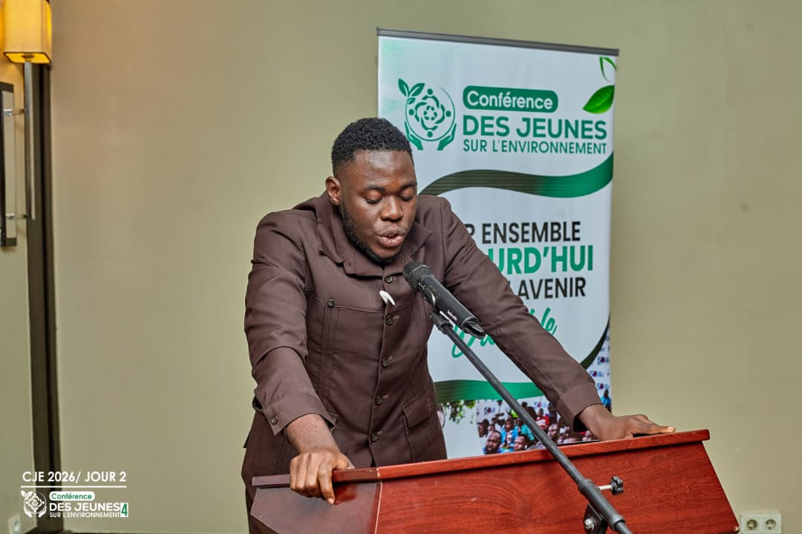

Droit et citoyenneté
Promouvoir la connaissance du droit et la responsabilité citoyenne.
Vice-président du Conseil provincial de la jeunesse du Maniema
Juriste | Acteur de jeunesse | Promoteur culturel
« Engagé pour une jeunesse responsable, une citoyenneté active et la promotion de la culture comme levier de développement. »

assets/images/profil-cherif.jpg
assets/images/profil-cherif.jpgNé à Kindu, dans la province du Maniema, Chérif Mwaku Mufinda est juriste, acteur de jeunesse et promoteur culturel congolais. Son parcours se situe à la croisée du droit, de l'engagement citoyen, de l'éducation et de la promotion de la culture.
Élu Vice-président du Conseil provincial de la jeunesse du Maniema le 19 janvier 2025, il poursuit un engagement consacré à la participation citoyenne et à la contribution de la jeunesse au développement de la République démocratique du Congo.
En savoir plusPromouvoir la connaissance du droit et la responsabilité citoyenne.
Valoriser la place des jeunes dans les instances de décision.
Soutenir le slam, la poésie et les talents artistiques des jeunes.
Repères biographiques et d'activité, non des statistiques institutionnelles.
Une victoire qui marque son parcours culturel.
LauréatUne initiative qui a mobilisé plus de 1 000 jeunes autour de la parole engagée.
OrganisateurLa jeunesse représente une force essentielle pour construire une société plus responsable, créative et engagée.
Entrer en contact